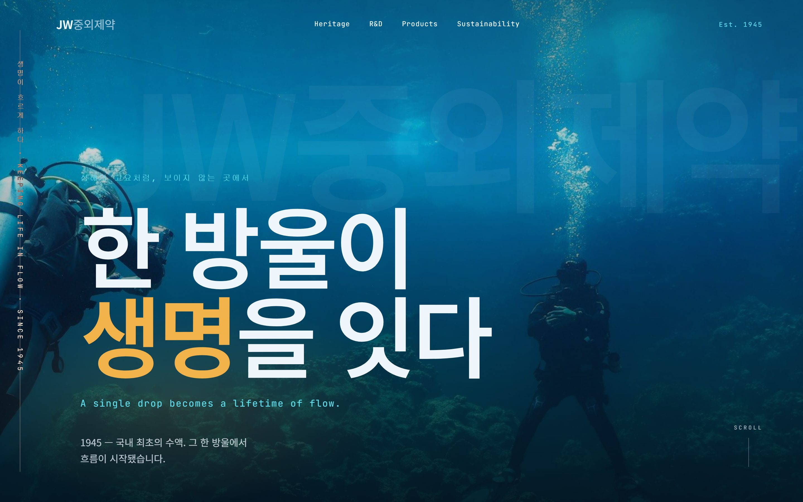
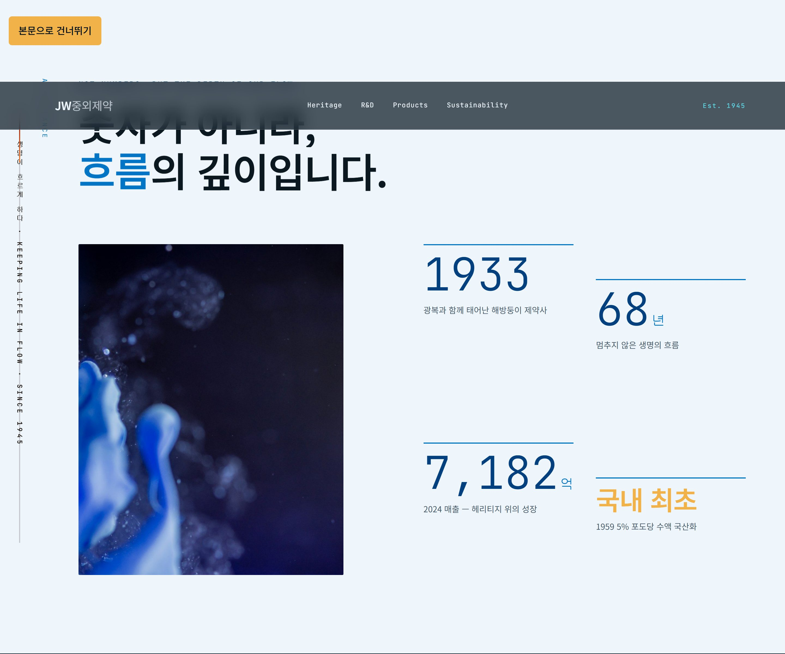
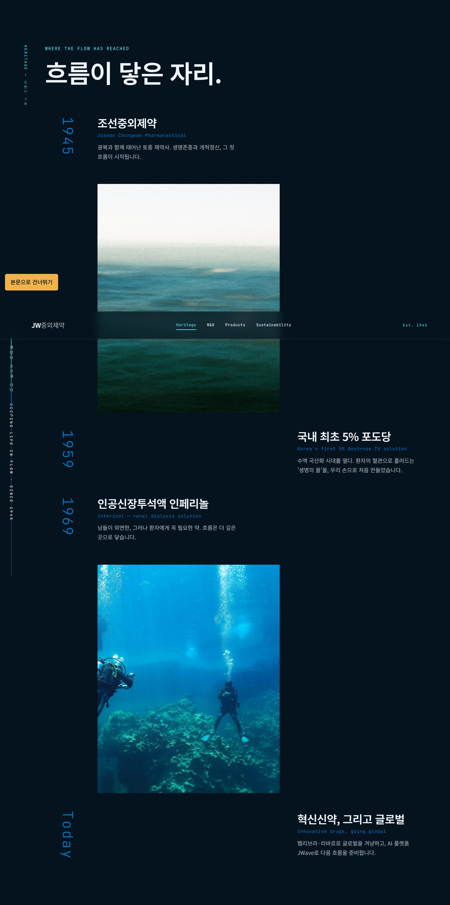
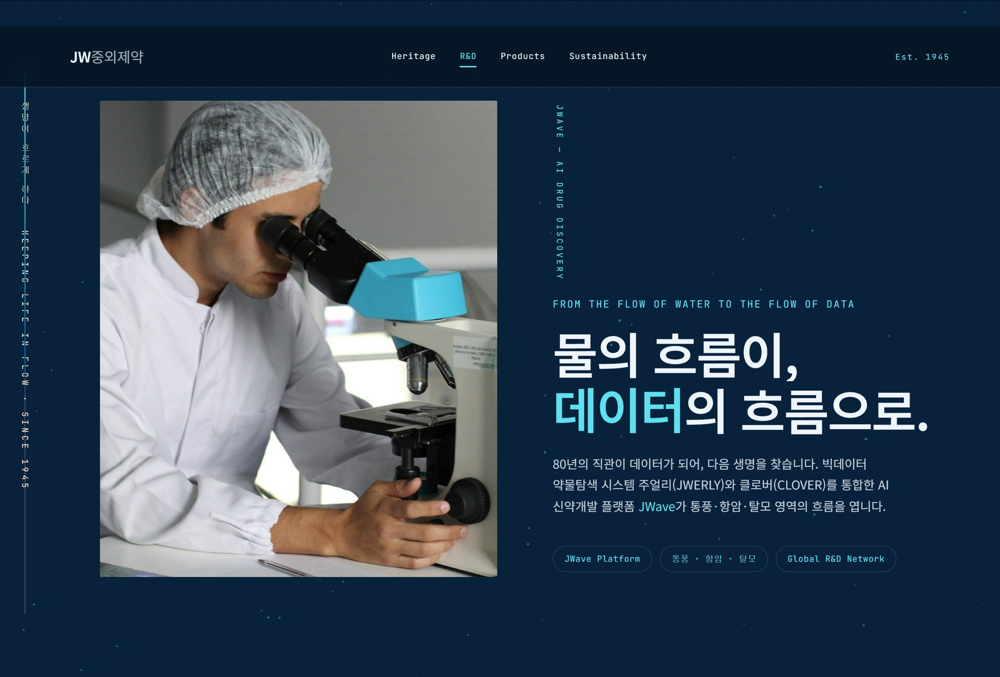
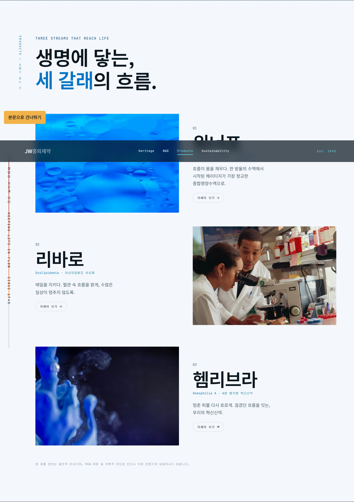
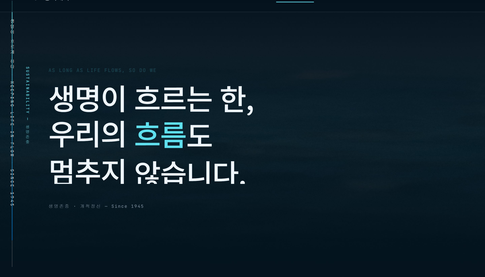
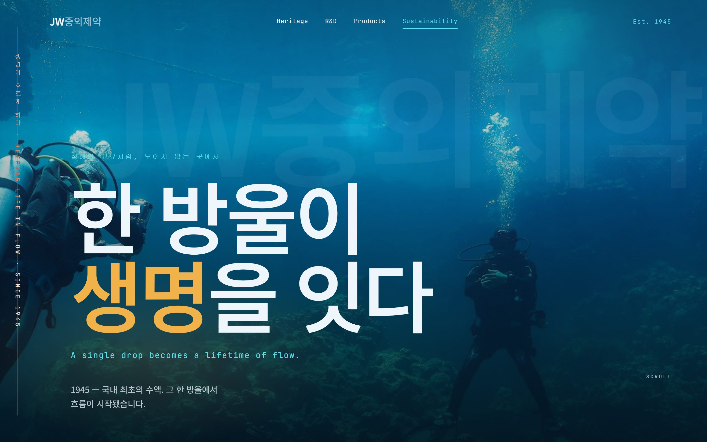
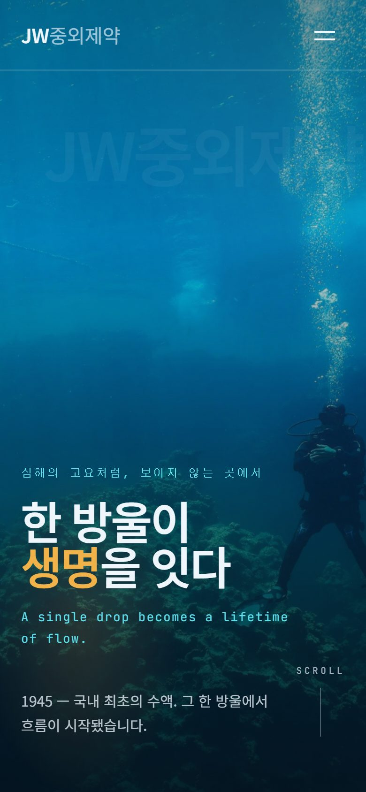

생명이 흐르게 하다KEEPING LIFE IN FLOW
1945년 한 방울의 수액에서 시작된 흐름. 국내 대형 제약사의 '기업 포털'식 사이트를 ‘고요의 심해’ 단일 서사로 재해석한 리디자인의 UX 사고 과정을 12단계로 기록한다.
브랜드와 사용자를 먼저 이해한다
브랜드 목적
1945년 광복과 함께 태어난 제약사. 국내 최초 수액(1959)에서 시작된 헤리티지 위에 "생명이 흐르게 하다"를 핵심 은유로, 혁신신약과 AI 신약개발 플랫폼 ‘JWave’를 함께 전한다.
핵심 가치
생명존중 · 개척정신 · 80년 헤리티지 · 연구 기술력 · 사회적 신뢰.
주요 사용자
- 환자·보호자 — 신뢰할 만한 회사인가, 어떤 약을 만드는가
- 투자자·구직자·파트너 — 규모·성장·R&D 경쟁력(JWave)
- 채용담당자·동료 — 브랜드 해석력과 인터랙티브 구현력
기존 사이트를 진단한다
국내 대형 제약사 기업 사이트의 통상 패턴을 기준으로 한 베이스라인 진단.
- 정보구조(IA)
- 회사소개/IR/제품/채용이 병렬 나열된 ‘기업 포털’ — 헤리티지·비전·제품이 흩어져 하나의 서사로 안 읽힘.
- 내비게이션
- 다층 GNB·방대한 메뉴로 브랜드 정서보다 ‘기능적 탐색’에 치우침.
- 시각 계층
- 보도자료·배너가 균질 나열 — 브랜드 메시지 위계 약함, ‘생명·흐름’ 정서 부재.
- 콘텐츠
- 사실 나열(설립·매출·제품명) 중심 — ‘생명을 대하는 태도’라는 정서 축이 약함.
- 인터랙션
- 정적 페이지·탭 전환 위주 — 핵심 은유 ‘흐름(flow)’이 움직임으로 구현되지 않음.
- 접근성
- 모션 강화 시 스크린리더·키보드·모션 민감 사용자, 한·영 병기 처리가 소홀해지기 쉬움.
- 모바일
- 다층 패럴랙스·캔버스·세로 타이포의 성능 부담과 소형 화면 처리 리스크.
무엇이, 왜 문제인가
- P1
병렬 IA가 브랜드 메시지를 흩어 ‘생명을 대하는 태도’가 전달되지 않는다.← 부서·기능 단위로 IA를 구성해 서사를 통합하지 못함
- P2
헤리티지(과거)와 R&D(미래)가 분리되어 ‘한 흐름’이라는 핵심 서사가 끊긴다.← ‘흐름’이라는 연결 개념을 IA로 승격하지 않음
- P3
사실 나열·스톡 이미지로 ‘생명·흐름’의 정서가 시각적으로 부재하다.← 이미지를 정보 삽화로만 사용, 은유를 시각 시스템화하지 않음
- P4
‘흐름(flow)’을 체감할 인터랙션 장치가 없다.← 모션을 장식으로 인식, 핵심 은유를 관통하는 장치 부재
- P5
딱딱한 기업 톤으로 신뢰가 숫자로만 쌓일 뿐 정서적 공감으로 이어지지 않는다.← 신뢰를 정량 지표로만 환원
사용자는 “이 제약사가 생명을 대하는 태도와, 과거에서 미래로 이어지는 흐름”을 신뢰감 있게 이해하려 하지만, 기업 포털식 병렬 IA와 사실 나열 탓에 브랜드 메시지가 흩어져 정서적 신뢰에 도달하지 못한다.
디자인 목표
기업 포털을 ‘고요의 심해’ 단일 서사로 재편해 브랜드 메시지를 하나로 모은다.
과거→현재→미래를 ‘흐름(flow)’이라는 하나의 축으로 연결한다.
‘물·심해·흐름’ 은유를 시각·인터랙션 시스템으로 구현해 정서적 신뢰를 만든다.
한·영 바이링구얼 프리미엄 경험을 제공하되 성능·접근성을 지킨다.
‘깊이로 내려가는’ 단일 스토리로 재편
- Hero심해
- Glance현황
- Heritage과거
- R&D미래·JWave
- Products제품
- Sustainability철학
- S1 서사 통합 IA — 위 6단계 ‘깊이로 내려가는’ 단일 스토리로 재편.
- S2 관통하는 은유 — 좌측 세로 타이포 강(江) + 진행 게이지로 ‘흐름’을 상시 각인.
- S3 물의 시각 시스템 — 심해·잉크·바다·기포 실사 + 다층 패럴랙스로 ‘깊이’를 조형화.
- S4 흐름의 연결 — Heritage 타임라인이 R&D의 “물의 흐름이 데이터의 흐름으로”로 이어져 과거·미래를 봉합.
- S5 정서적 신뢰 — 카운트업 수치를 “숫자가 아니라 흐름의 깊이”로 프레이밍, 철학으로 클로징.
- S6 접근성·성능 — skip-link, 장식 aria-hidden, 한·영 병기, reduced-motion·저사양 대비.
전략을 화면으로 옮기다






‘고요의 심해’ 디자인 시스템
Palette
- abyss#04131E
- abyss2#07223A
- deep#00407F
- blue#0075C5
- light#00A9E5
- cyan#5FE0EF
- vital#F2B24A
- foam#EEF5FB
Typography
Noto Sans KR — 생명이 흐르게 하다본문 · 제목
JetBrains Mono — SINCE 1945 · KEEPING LIFE IN FLOW데이터 · 라벨 · 연구소 감성
Motion
세로 진행 게이지(흐름) · 섹션 진입 클립 리빌 · 카운트업 수치 — 모두 prefers-reduced-motion에서 축소.
ease는 cubic-bezier(0.22, 1, 0.36, 1) 하나로 통일해 리듬을 일관되게 유지.
완성된 화면


결함을 보강하다 컨셉 보존형 2차 개선
기대 효과
- 기업 포털이 ‘고요의 심해’ 단일 서사로 모여 브랜드 메시지가 명확·정서적으로 각인된다.
- 세로 타이포 강·패럴랙스가 ‘흐름’ 은유를 상시 체감시켜 몰입·기억도를 높인다.
- 헤리티지 → R&D 구성으로 과거·미래가 ‘한 흐름’으로 이해된다.
- 카운트업 수치의 정서적 프레이밍으로 신뢰가 숫자를 넘어 공감으로 확장된다.
- 한·영 병기·접근성 배려로 폭넓은 사용자에게 프리미엄 경험을 균질하게 제공한다.
회고
이 프로젝트에서 가장 신경 쓴 것은 ‘컨셉을 지키면서 결함만 보강’하는 균형이었다. 심해·흐름이라는 은유는 브랜드의 핵심 자산이라 손대지 않되, 모바일 내비 소멸이나 막다른 CTA처럼 실제 사용자를 막는 결함은 코드 레벨에서 근거(파일:라인)를 짚어 국소적으로 고쳤다.
몰입형 인터랙션과 접근성·성능은 자주 충돌했다. 다층 패럴랙스·캔버스를 늘리는 대신 기존 스크롤 계산값을
재사용해 게이지를 만들고, 모든 신규 모션을 prefers-reduced-motion에서 축소하는 식으로 ‘화려함’과
‘책임감’ 사이를 조율했다. 결과의 감도만큼이나 왜 그렇게 했는지를 설명할 수 있는가가 중요하다는 걸 배웠다.
남은 과제도 솔직히 남겨둔다. 채용·IR은 실제 페이지가 없어 ‘준비 중’ placeholder로 처리했고, 60fps·모바일 발열은 브라우저 실측으로 계속 확인이 필요하다. 이 케이스 스터디는 그 과정을 감추지 않고 드러내는 기록이다.